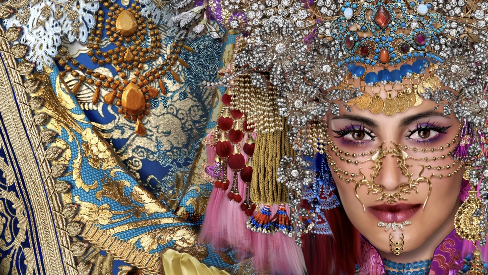

About
Bassam
Anouti
At the intersection of classical visual culture and contemporary digital practice.
Bassam Anouti is a multidisciplinary artist, art historian, educator and digital image-maker whose work is shaped by a broad academic and creative formation across art history, French literature, clinical psychology, fine arts, fashion design, jewelry design and graphic design.
His practice brings together research, image-making and visual storytelling. Working across photography, digital painting, compositing and mixed media, Anouti develops images that are both constructed and narrative. His work is grounded in historical, anthropological, literary and mythological research, without being limited to illustration. Each image is conceived as a visual situation in which characters, symbols and cultural references enter into tension.
Narration plays a central role in his artistic language. The figures and scenes he constructs establish a dialogue with the viewer, opening a space of interpretation rather than delivering a fixed meaning. His images often operate through confrontation, ambiguity and psychological intensity, allowing the spectator to participate in the story being staged.
Alongside his artistic practice, Anouti has developed a strong pedagogical practice in the visual arts, with a focus on contemporary image-making, digital tools and creative methodologies. He has also worked with UNDP as a trainer and mentor, contributing to programs dedicated to visual development and digital creation.
Anouti’s work stands at the intersection of classical visual culture and contemporary digital practice. It reflects a sustained interest in collective memory, symbolic systems, cultural hybridization and the narrative power of images.
View the work
02 / Visual language
Order
against chaos.
Having come of age in the chaos of the Lebanese Civil War, Anouti witnessed disorder firsthand. His response has been to make work that is cérébrale, ordonnée et réfléchie — cerebral, ordered, and reflective — a deliberate counter-narrative to the socio-political and human disorder he lived through.
Drawing on principles of psychology, his art-making functions as an intellectual exercise: by imposing meticulous structure, symmetry, and thought, he symbolically mends the fractures of a broken world. His compositions are concept-driven and highly deliberate, the inverse of the randomness of a war-torn reality.
His art stages a dialogue between Eastern and Western iconography — weaving Babylonian and Levantine mythologies through European technique, juxtaposing the ancient with the modern. Anouti assumes an audience with artistic and literary appreciation, and a historical understanding of Eastern and Western cultures, as well as their symbolism.